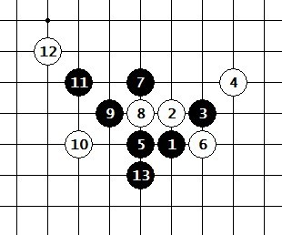

五子棋里的相似型
#1 五子棋里的相似型作者：蓝天蓝 发表时间：2011-11-27 21:41:04
五子棋里的相似型在五子棋里，有很多形状看上去很相似的形状，有的相似型是可以用同样的下法，有的相似型却不行。（1）
这个形状，让我们想到了云月的一个同样的形状，如图（2）那么这两个形状能同样的下吗？
（2）
那么花月如果按图（2）的方法行棋，能取胜吗？我们可以看图（3），图（3）与图（2）的区别在于图（3）多了两个子，3，4两个子，那么这两个子会不会影响这个黑胜呢？这里是不会的。因为图（2）的形状取胜就是利用黑能绕一圈的进攻思路。3手正好可以促进黑的进攻思路，4手并不影响黑胜的线路，所以这个相似型是可以同样的方法取胜。

（3）
从上面的思路，我们可以知道，相似型是可以用同样的思路去行棋，但是条件是，多余的棋子不会影响这个棋的进攻线路。
那么有没有相似型是不能同样去下的，这里我们看图（4），图（4）和图（1）的区别在于10手的防守不同，图（4）让我们想到了同样的云月下法，如图（5），看起来两个图形非常相似
（4） （5）
我们如果比较熟悉的话，我们就知道，图（5）黑是可以连续VCT胜。那么图（4）是不是也能VCT，这里我们要去分析，而不是直接套用图（5）结论，图（4）比图（5）多了3和4这两手，那么这两手会影响VCT胜？图（5）的VCT是怎么样的？
（6）
图（5）的VCT的胜法如图（6），那么图（4）用同样的方法就是不能取胜的，因为图(4)如果按这个方法去进攻，那么就相当于图（6）中黑先把4上面的眠三提前冲 #2 Re:五子棋里的相似型作者：炫飞☆冲四不挡 发表时间：2011-11-27 23:55:25 #3 Re:五子棋里的相似型作者：手术 发表时间：2011-11-28 10:52:06 支持一下高飞老师。对五子棋的执着和取得的优秀成绩让我很敬佩。 #4 Re:Re:五子棋里的相似型作者：小小亦默 发表时间：2011-11-28 18:42:53 支持一下高飞老师。对五子棋的执着和取得的优秀成绩让我很敬佩。 #5 Re:Re:五子棋里的相似型作者：蓝天蓝 发表时间：2011-11-28 20:12:18 支持一下高飞老师。对五子棋的执着和取得的优秀成绩让我很敬佩。 #6 Re:五子棋里的相似型作者：小小亦默 发表时间：2011-11-28 20:19:47 刚刚才认真看了一遍 不错 打酱油路过，很正常的想法。
打酱油路过，很正常的想法。引用：
恩 我也是这样想的 而且棋德很不错
原文由 手术 发表于 2011-11-28 10:52:06 :引用：
这个帖子就是应高飞老师才发的
原文由 手术 发表于 2011-11-28 10:52:06 :